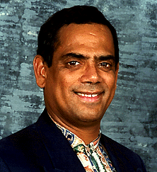

Jonny Luis Días, nace en Caracas el 16 de agosto de 1952.
Vive actualmente en la avenida Libertador, residencias Trujillo, piso 18, apartamento 181, Maripérez, Caracas. Sus teléfonos son: ofc. 2617748, hab. 5744406, cel. 014-260726.
Guataco, trabajó en Tecnofolklore desde 1980 en la producción y diseño de material educativo y recreativo, luego desde 1987 en la Fundación Guataco en el diseño y producción de proyectos y programas de acción comunitaria. Trabajó también en el Instituto de Estudios Superiores IPET, como profesor de folklore y en La Fiesta de Los Juguetes C.A., como director desde el 92 al 94.
Guataco es autor de canciones infantiles, obras de teatro ("No hay mal que dure cien años", "Fábula del rey papagayo", "El canto encantado"), de cuentos y juguetes infantiles recreativoseducativos, etc. Está afiliado a SACVEN, es director suplente de CAVEFAJ (Cámara Venezolana de Juguetes, desde el 93 al 94) y director de REDNADOC (Red Nacional de Desarrollo de Organizaciones Culturales, desde el 93 al 95).
Guataco dice: "Tengo una misión que cumplir, elevar a la máxima expresión el concepto de la acción lúdica de los juegos y juguetes tradicionales en cada ser que renueva y podré lograrlo gracias a la fuerza incontenible del cósmos, comandada por Dios y la ayuda incondicional de mis semejantes".